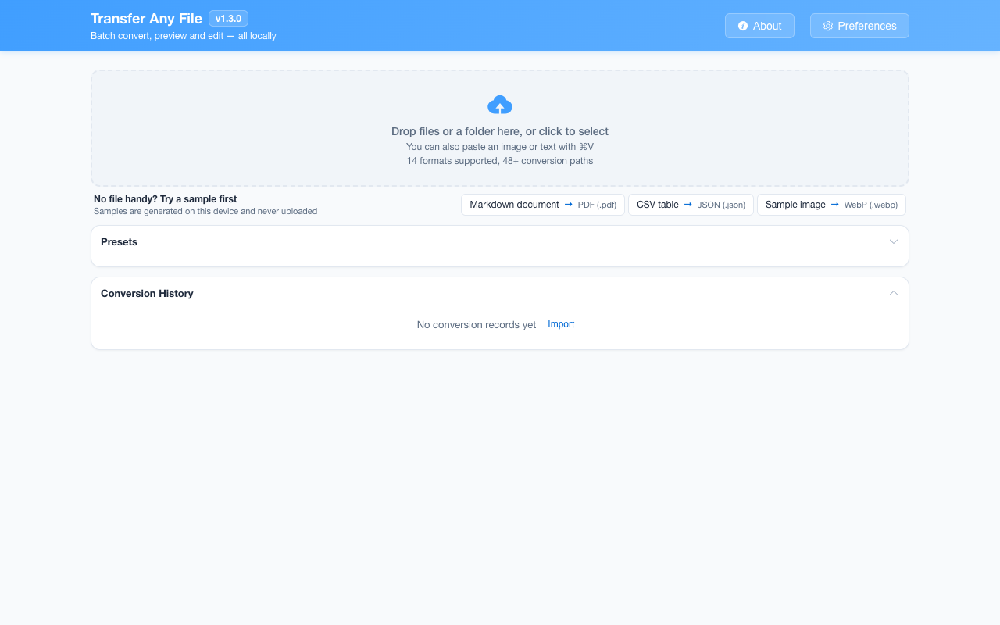

离线 · 无上传 · 浏览器本地完成Offline · no uploads · runs in the browser
HTML 转换：全部可用目标HTML conversions: every available target
HTML 同时带着结构和呈现：标签说这是什么，CSS 说这看起来怎样。文档类目标接住标签与文字，图片类目标接住呈现，数据类目标只接住 `<table>`。想清楚你要的是哪一种，比选格式更重要。HTML carries both structure and presentation: tags say what something is, CSS says what it looks like. Document targets keep tags and text, image targets keep the look, and data targets keep only the `<table>`. Knowing which of the three you need matters more than the format name.

全部可用目标Every available target
-
MarkdownMarkdown 1 步1 step
HTMLHTML MarkdownMarkdown
浏览器本地把 HTML 转成 GFM：标题、列表、表格与任务复选框保留，内联 SVG 先栅格化成 PNG，图片仍写成 Markdown 链接。Turn an HTML page into GFM in your browser: headings, lists, tables and task checkboxes survive, inline SVG becomes a PNG, images stay as links.
-
Word (.docx)Word (.docx) 1 步1 step
HTMLHTML Word (.docx)Word (.docx)
在浏览器本地把 .html 打包成 .docx：标题、列表、表格、链接与内联图示成为 Word 里的真实内容；远程子资源在打包前剥掉，Word 打开时不会替你联网。Pack an HTML page into a real .docx in your browser: headings, lists, tables and diagrams survive, and remote subresources are stripped before Word opens it.
-
PDFPDF 1 步1 step
HTMLHTML PDFPDF
浏览器本地把 .html 渲染成多页 A4 PDF：800 px 版心按整页高度切片，切片是无损 PNG；脚本被移除，远程资源不会被取回。Render .html into a multi-page A4 PDF locally: an 800 px layout sliced down its full height, stored as lossless PNG. Scripts are removed; nothing is fetched.
-
Excel (.xlsx)Excel (.xlsx) 3 步3 steps
HTMLHTML JSONJSON CSVCSV Excel (.xlsx)Excel (.xlsx)
网页里的 `<table>` 经 JSON 与 CSV 落进一张工作表：15 位以内的数字可求和，`00424` 与 16 位账号保持字符，`=` 开头加护栏。全程离线。A page table goes through JSON and CSV into one worksheet: 15-digit numbers become summable, 00424 and 16-digit IDs stay text, and = is disarmed. Offline.
-
CSVCSV 2 步2 steps
HTMLHTML JSONJSON CSVCSV
把网页保存下来的表格变成能再计算的 CSV：首行当列名，`<th>` 与 `<td>` 都算一格，链接只取文字，页面里的远程引用一个字节都不去取。A table from a saved page becomes a CSV you can compute on: first row headers, `th` and `td` both count as cells, and no remote reference is ever fetched.
-
纯文本 (TXT)plain text (TXT) 1 步1 step
HTMLHTML 纯文本 (TXT)plain text (TXT)
在浏览器里从 HTML 抽取可读文本：块级元素换行，列表保留编号，链接保留 URL，表格单元格用制表符分隔。Extract readable text from an HTML page in the browser: blocks become line breaks, lists keep their numbers, links keep their URLs.
-
JSONJSON 1 步1 step
HTMLHTML JSONJSON
把网页里的 `<table>` 变成对象数组：首行当键名，`<th>` 与 `<td>` 都算一格；多张表按小标题分组。全程离线，页面里不请求任何东西。Turn a page’s `<table>` into objects: the first row supplies keys, `th` and `td` both count, and several tables group by heading. Offline — nothing is fetched.
-
PNGPNG 1 步1 step
HTMLHTML PNGPNG
浏览器本地把 .html 渲染到画布再编码为 PNG：800 px 宽、按内容实际高度出整页长图，远程引用与脚本在渲染前就被处理掉。全程不出本机，没有截图软件、也没有服务端渲染。Render a .html file to a canvas and encode it as PNG: 800 px wide, one tall image as long as the content is, with remote references never fetched.
-
JPEGJPEG 2 步2 steps
HTMLHTML PDFPDF JPEGJPEG
文档整篇渲染一次、按 A4 切成无损页面，再逐页编码成 JPEG：两页以上打包成 ZIP，透明区域铺白。全程离线，脚本不执行、远程资源不取字节。The page is rendered once, sliced into A4 pages stored losslessly, then encoded JPEG by JPEG; several pages arrive in a ZIP. Fully offline.
-
WebPWebP 2 步2 steps
HTMLHTML PDFPDF WebPWebP
文档整篇渲染一次、按 A4 切成无损片段存进 PDF，再逐页编码成 WebP：两页以上打包 ZIP，质量与目标体积可调。全程离线，脚本不执行。The document is rendered once, sliced into lossless A4 pages inside a PDF, then encoded WebP page by page; several arrive in a ZIP. Fully offline.
这个来源格式的共同限制What holds for every target from this source
- 脚本不会执行：解析后立即剥离 `<script>`、`<style>` 与内联事件处理器，页面里的动态内容不会出现在结果中Scripts never run: `<script>`, `<style>` and inline event handlers are stripped after parsing, so anything the page would have rendered dynamically is absent
- 远程图片、字体与样式表不会下载；渲染前剥离子资源引用，取不到字节的图片按张数披露Remote images, fonts and stylesheets are not downloaded; subresource references are stripped before rendering and images without bytes are counted
- CSS 版式只在图片与 PDF 路线上生效，Word、Markdown、TXT 与表格路线只保留语义结构CSS layout survives only on the image and PDF routes; Word, Markdown, TXT and table routes keep semantic structure alone
- 一个 HTML 文件可以引用同目录的图片，但只有同一批次里也选入那张图片时才有字节可用An HTML file may reference an image sitting next to it, but the bytes exist only when that image is part of the same batch
常见问题Questions people actually ask
HTML 里的 JavaScript 会被执行吗？Does JavaScript inside the HTML run?
不会。文件先作为文本解析，`<script>`、样式与事件属性在进入转换器之前就被移除；没有 `eval`，也没有把页面挂进实时 DOM 去跑。动态生成的内容因此不会出现。No. The file is parsed as text and `<script>`, styles and event attributes are removed before a converter sees it. Nothing is evaluated and the page is never mounted into the live DOM, so dynamically generated content does not appear.
HTML 转 Word 与 HTML 转 PDF 有什么不同？How are HTML to Word and HTML to PDF different?
Word 得到的是可编辑段落与表格，版式按文档主题重排；PDF 得到的是 A4 页面图像，看起来更接近浏览器，但文字不可选中、也不能编辑。Word receives editable paragraphs and tables, with layout rebuilt from the document theme. PDF receives A4 page images that look closer to the browser, but the text is neither selectable nor editable.
为什么 HTML 转 Excel 只拿到一部分内容？Why does HTML to Excel keep only part of the page?
Excel 只有行列。转换器读取 `<table>` 的行与单元格，正文、导航与样式没有坐标可放。页面没有表格时，它只尝试读取 `<pre>` 或 `<code>` 里的 JSON，再失败就报错。Excel only has rows and columns. The converter reads the rows and cells of `<table>` elements, while prose, navigation and styling have no coordinates. With no table it only tries JSON inside `<pre>` or `<code>`, and fails otherwise.
本地的 `<img src="photo.jpg">` 会跟着走吗？Does a local `<img src="photo.jpg">` travel with the result?
只有那张图片也在同一批次里时才会。扩展不会去磁盘上按路径翻找文件；取不到字节的引用会在渲染前被剥离，并在结果卡上按张数披露。Only when that image is in the same batch. The extension does not go looking for files by path on disk; references it cannot read are stripped before rendering and counted on the result card.
不需要账号，也不需要联网：装好扩展后点图标，在新标签页里打开工作台，文件从磁盘直接选。No account and no network: install the extension, click its icon, and the workbench opens in a new tab reading straight off your disk.
从 Chrome 应用商店安装Install from the Chrome Web Store 安装步骤Install steps GitHub 源码Source on GitHub
最后更新 2026-10-21Last updated: 2026-10-21